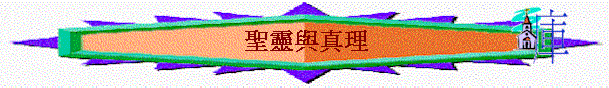

|
認
識 聖 靈 |
|||
|
緒論 |
聖靈與真理 |
聖靈與生命 |
聖靈與能力 |
引言：
「為何我感受不到聖靈……」
「何謂聖靈微小的聲音…..」
「我有聖靈的感動，得了聖靈的默示……」
「他所受的靈為何與我們領受的不同？那個是真？」
一.聖靈就是真理
「就是真理的聖靈，乃世人不能接受的；因為不見他，也不認識他。你們卻認識他，因他常與你們同在，也要在你們裡面。」約14:17
「並戴上救恩的頭盔，拿著聖靈的寶劍，就是神的道。」弗6:17
「並且有聖靈作見證，因為聖靈就是真理。」約壹5:7
〜耶穌說：「我是道路、真理、生命」，不單耶穌是真理，聖靈也是，聖經形容聖靈是真理的聖靈，聖靈的寶劍就是神的道，所以若有人以為內住己心的是聖靈，但由此靈所流露的言語及表現卻沒有真理，違反真理，敵擋真理的，就不是聖靈了。
二.在真理下工作
1.想起基督的話
「但保惠師，就是父因我的名所要差來的聖靈，他要將一切的事指教你們，並且要叫你們想起我對你們所說的一切話。」約14:26
～若那人時常稱在敬拜聚會中被聖靈充滿，但很多時候不會想起主的話，似乎不太像真被聖靈充滿。
2.明白一切真理
「只等真理的聖靈來了，他要引導你們明白（原文作進入）一切的真理；因為他不是憑自己說的，乃是把他所聽見的都說出來，並要把將來的事告訴你們。」約16:13
3.參透奧秘的事
「只有神藉著聖靈向我們顯明了，因為聖靈參透萬事，就是神深奧的事也參透了。」林前2:10
「然而，屬血氣的人不領會神聖靈的事，反倒以為愚拙，並且不能知道，因為這些事惟有屬靈的人才能看透。屬靈的人能看透萬事，卻沒有一人能看透了他。」林前2:14-15
〜不信的人、屬血氣的人難領會屬靈的事，但信主的人，有聖靈在心中，可以明白關乎屬靈的奧秘。
4.得啟示和預言
「在耶路撒冷有一個人，名叫西面；這人又公義又虔誠，素常盼望以色列的安慰者來到，又有聖靈在他身上。他得了聖靈的啟示，知道自己未死以前，必看見主所立的基督。」路2:25-26
「這奧秘在以前的世代沒有叫人知道，像如今藉著聖靈啟示他的聖使徒和先知一樣。」弗3:5
「聖靈明說，在後來的時候，必有人離棄真道，聽從那引誘人的邪靈和鬼魔的道理。」提前4:1
「聖靈向眾教會所說的話，凡有耳的，就應當聽！」啟3:6
〜由於當時新約聖經仍未出現，聖靈會向某一些人啟示真理及發出預言，他們亦受聖靈感動，寫出很多書卷來給信徒傳閱
5.更深認識神
「求我們主耶穌基督的神，榮耀的父，將那賜人智慧和啟示的靈賞給你們，使你們真知道他，」弗1:17
6.引導行神的路
A.聖靈感動/引導
「不要消滅聖靈的感動。」帖前5:19
「因為情慾和聖靈相爭，聖靈和情慾相爭，這兩個是彼此相敵，使你們不能做所願意做的。但你們若被聖靈引導，就不在律法以下。」加5:17-18
B.直接說明
「聖靈對腓利說：「你去！貼近那車走。」」徒8:29
「他們事奉主、禁食的時候，聖靈說：「要為我分派巴拿巴和掃羅，去做我召他們所做的工。」」徒13:2
C.凡事教訓
「你們從主所受的恩膏常存在你們心裡，並不用人教訓你們，自有主的恩膏在凡事上教訓你們。這恩膏是真的，不是假的；你們要按這恩膏的教訓住在主裡面。」約壹2:27
D.得智慧對答
「人帶你們到會堂，並官府和有權柄的人面前，不要思慮怎麼分訴，說什麼話；因為正在那時候，聖靈要指教你們當說的話。」路12:11-12
E.幫助守主道
「從前所交託你的善道，你要靠著那住在我們裡面的聖靈牢牢的守著。」提後1:14
三.慎防假的靈
1.特質
A.不只一個
「我們所領受的，並不是世上的靈，乃是從神來的靈，叫我們能知道神開恩賜給我們的事。」林前2:12
「又叫一人能行異能，又叫一人能作先知，又叫一人能辨別諸靈，又叫一人能說方言，又叫一人能繙方言。」林前12:10
〜原來除了聖靈外，也有世上的靈及諸靈的，牠們是屬撒但的，是跟牠一夥的。
B.是邪惡的
「那時，你們在其中行事為人，隨從今世的風俗，順服空中掌權者的首領，就是現今在悖逆之子心中運行的邪靈。」弗2:2
「聖靈明說，在後來的時候，必有人離棄真道，聽從那引誘人的邪靈和鬼魔的道理。」提前4:1
C.敵基督的
「凡靈不認耶穌，就不是出於神；這是那敵基督者的靈。你們從前聽見他要來，現在已經在世上了。」約壹4:3
D.有道理的
「聖靈明說，在後來的時候，必有人離棄真道，聽從那引誘人的邪靈和鬼魔的道理。」提前4:1
〜人甚致會相信跟從的
E.有能力的
「他們本是鬼魔的靈，施行奇事，出去到普天下眾王那裡，叫他們在神全能者的大日聚集爭戰。」啟16:14
2.慎防
A.不順從
「你們死在過犯罪惡之中，他叫你們活過來。那時，你們在其中行事為人，隨從今世的風俗，順服空中掌權者的首領，就是現今在悖逆之子心中運行的邪靈。」弗2:1-2
〜以往是順從邪靈放縱肉體私慾，但信主後，我們卻有能力不順從了!
B.讓離開
「假如有人來另傳一個耶穌，不是我們所傳過的；或者你們另受一個靈，不是你們所受過的；或者另得一個福音，不是你們所得過的；你們容讓他也就罷了。」林後11:4
C.不動心
「我勸你們：無論有靈、有言語、有冒我名的書信，說主的日子現在（現在或作就）到了，不要輕易動心，也不要驚慌。」帖後2:2
D.要提醒
「聖靈明說，在後來的時候，必有人離棄真道，聽從那引誘人的邪靈和鬼魔的道理。這是因為說謊之人的假冒；這等人的良心如同被熱鐵烙慣了一般。」提前4:1-2
「你若將這些事提醒弟兄們，便是基督耶穌的好執事，在真道的話語和你向來所服從的善道上得了教育。」提前4:6
E.要試驗
～要驗他裡面的靈（不是他）是否認耶穌基督是成了肉身來的，不是他本人認，而是他裡面的靈認！